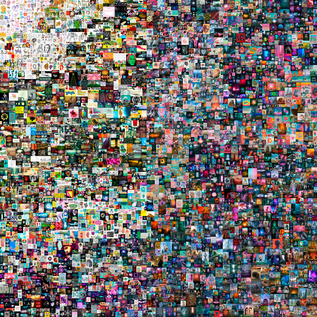
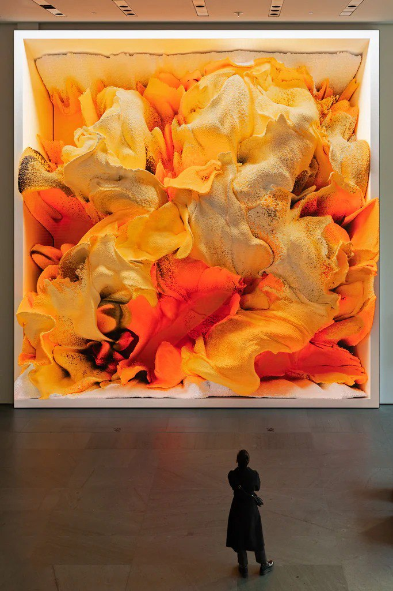
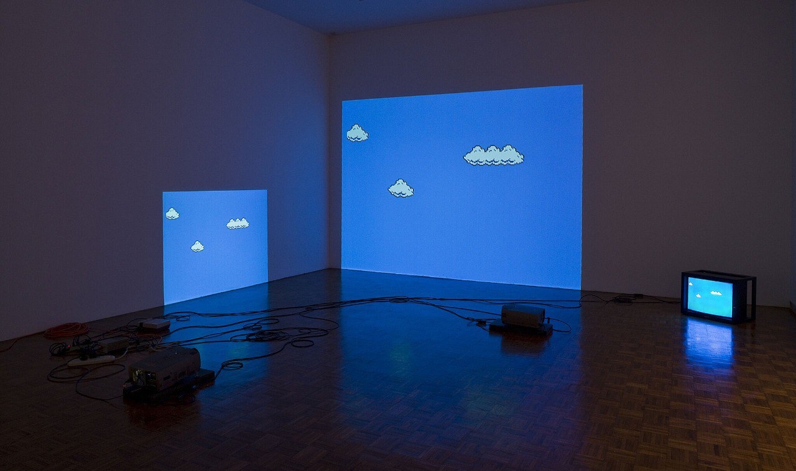
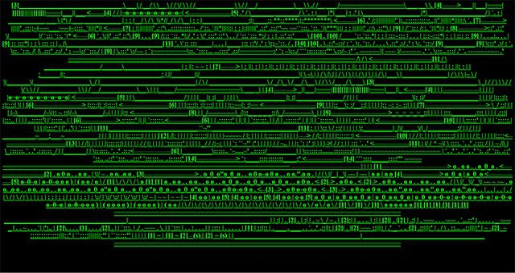
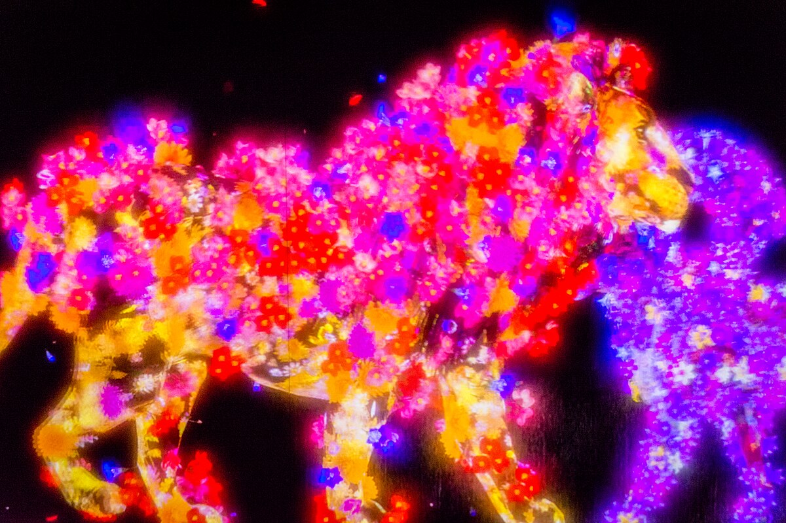
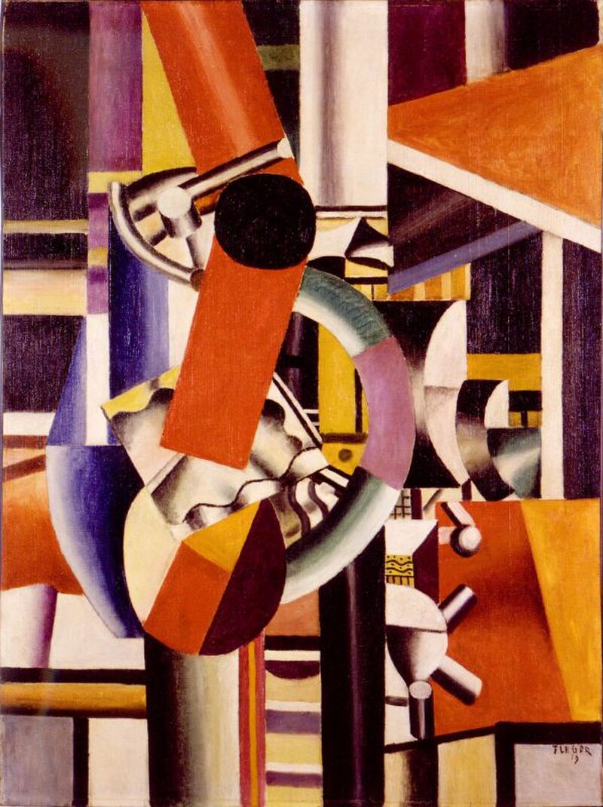
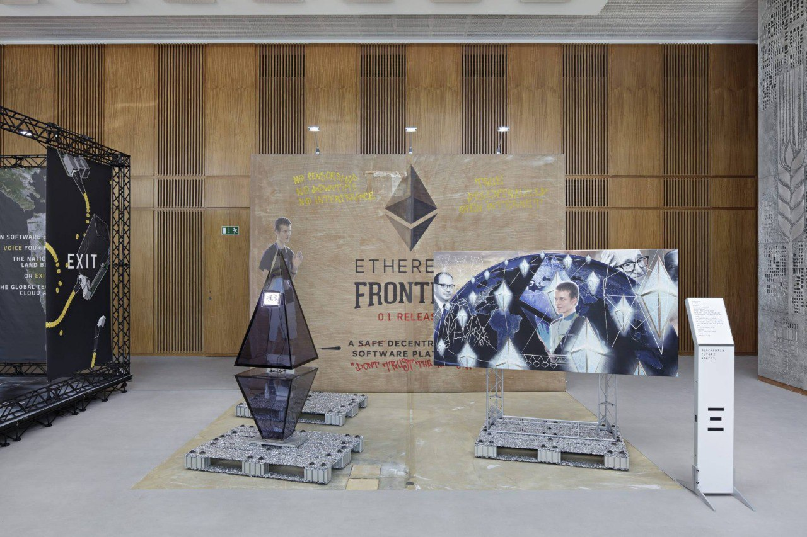

Meesterwerk: Everydays: The First 5000 Days
Beeple, 2021

⚜️ STIJLFIGUREN & KENMERKEN
🔗 BLOCKCHAIN & NFT'S
Eigendom: NFT's (Non-Fungible Tokens) veranderen wat "bezitten" betekent.
Uniekheid: Digitale schaarste door cryptografie.
🔗 Tijdsgeest Connecties
Economie: Cryptocurrency (Bitcoin 2009) - decentralisatie van waarde
Filosofie: Wat is eigendom zonder fysiek object?
Politiek: Democratisering vs. speculatie - kunst voor iedereen of alleen voor rijken?
🤖 KUNSTMATIGE INTELLIGENTIE
GAN's: Generative Adversarial Networks creëren beelden.
Co-creatie: Mens en machine samen.
🔗 Tijdsgeest Connecties
Wetenschap: Deep Learning (2012) - machines "leren" zien
Filosofie: Wat is auteurschap? Wie is de kunstenaar?
Ethiek: Bias in AI - wiens waarden worden geleerd?
🥽 VIRTUAL & AUGMENTED REALITY
Immersie: De kijker betreedt het kunstwerk.
Hybriditeit: Digitaal en fysiek versmelten.
🔗 Tijdsgeest Connecties
Literatuur: Cyberpunk (Gibson's "Neuromancer", 1984) - virtuele werelden
Filosofie: Baudrillard's "Simulacra" - de werkelijkheid is al simulatie
Psychologie: Identiteit in avatar-vorm - wie ben je online?
📱 NETWERKCULTUUR
Memes, GIFs, sociale media: Het internet als canvas.
Viraal: Kunst verspreidt zich in seconden wereldwijd.
🔗 Tijdsgeest Connecties
Politiek: Social media als revolutionair platform (Arabische Lente 2011)
Sociologie: "Dertig seconden bekendheid" (Warhol) wordt realtime
Psychologie: Dopamine-economie - likes als validatie
📚 TIJDSGEEST CONTEXT ()
🌍 POLITIEK PERSPECTIEF
De digitale kunst (1970-heden) ontwikkelde zich in een politieke context van technologische revolutie, de opkomst van het internet en de digitalisering van de samenleving. De politieke structuur werd gedomineerd door de spanning tussen corporatieve controle en open-source idealen, tussen surveillance en privacy, en tussen technologische vooruitgang en digitale ongelijkheid. De digitale revolutie, die begon met de ontwikkeling van de personal computer in de jaren zeventig en explodeerde met het world wide web in de jaren negentig, transformeerde niet alleen de economie en communicatie, maar ook de politieke machtsverhoudingen. Tech-giganten als Google, Facebook, Apple en Amazon verworven macht die traditionele staten evenaarde of overtrof, terwijl overheden worstelden met de regulering van een grenzeloze digitale ruimte.
De sociale dynamiek werd gekenmerkt door de opkomst van een nieuwe digitale cultuur, waarin identiteit, gemeenschap en realiteit werden gereconstrueerd in virtuele ruimtes. Sociale media transformeerden politieke participatie: de Arabische Lente van 2011 werd georganiseerd via Facebook en Twitter, maar dezelfde platforms werden ook instrumenten van desinformatie, foreign interference en politieke manipulatie. De anonimiteit en democratisering van het internet stelden kunstenaars in staat om buiten traditionele instituties te werken, maar creëerde ook nieuwe vormen van online haat, trolling en harassments. De gig-economie, aangedreven door digitale platforms, fundeerde een nieuwe precariaat van werknemers zonder sociale bescherming.
Belangrijke politieke gebeurtenissen omvatten de Snowden-onthullingen van 2013, die de omvang van staatsurveillance onthulden; de Cambridge Analytica-scandal van 2018, die de manipulatie van verkiezingen via data-analyse demonstreerde; en de AI-revolutie, die vragen opriep over werk, autonomie en menselijke waardigheid. Kunstenaars als Trevor Paglen visualiseerden de onzichtbare infrastructuur van surveillance; Hito Steyerl analyseerde de politiek van beelden in de digitale tijd; en collectieven als Forensic Architecture gebruikten digitale tools voor onderzoek naar mensenrechtenschendingen. De blockchain-technologie beloofde decentralisatie en democratisering, maar werd ook gedomineerd door speculatie en milieuschade.
De verbinding tussen politiek en artistieke praktijk was fundamenteel. Digitale kunst onderzocht de politieke dimensies van technologie: wie bezit de infrastructuur? Wie controleert de data? Wie profiteert van algoritmes? De netzkunst van de jaren negentig, zoals die van Jodi en Olia Lialina, ondermijnde de commerciële logica van het web. Glitch art onthulde de fouten en vooronderstellingen in digitale systemen. AI art stelde vragen over creativiteit, auteurschap en de rol van de mens in een geautomatiseerde wereld. De digitale kunst was daarmee niet slechts een nieuwe medium, maar een politiek instrument om de fundamentele transformaties van de 21e-eeuwse samenleving te begrijpen en te bekritiseren.
Bronnen: Wikipedia - Digital art, Internet art, Surveillance capitalism, Edward Snowden, Cambridge Analytica, Artificial intelligence.
📖 LITERAIR PERSPECTIEF
- Post-internet literatuur ontstaat
- Cyberpunk (William Gibson, Neal Stephenson) wordt werkelijkheid
- Transhumanisme (Kurzweil) droomt van mens-machine fusie
- E-books en self-publishing democratiseren
- Twitter-poezie, Instagram-verhalen
- De grens tussen auteur en lezer vervaagt in interactieve verhalen
- Net als conceptuele kunst: de vorm is vloeibaar, het platform is de boodschap
🧠 PSYCHOLOGISCH PERSPECTIEF
- Identiteit wordt digitaal
- Wie ben je op Facebook, Instagram, TikTok? Sherry Turkle's "Alone Together" (2011) - verbonden maar eenzaam
- Gamer-identiteit: avatars als zelfexpressie
- Online communities als nieuwe stammen
- FOMO (Fear Of Missing Out), doomscrolling, digitale detox
- De psychologische impact van constante connectiviteit
- Kunst wordt een ruimte om deze ervaringen te reflecteren
⚙️ HISTORISCH PERSPECTIEF
- Dot-com bubble (2000) - irrational exuberance en crash
- Smartphones (iPhone 2007) maken internet overal
- Social media veranderen communicatie, politiek, relaties
- De cloud (AWS 2006) - data woont niet meer op je computer
- AI-winter wordt AI-voorjaar (Deep Learning 2012, ChatGPT 2022)
- Cryptokitties (2017) start NFT-goldrush
- De historie versnelt - wat vandaag nieuw is, is morgen oud
🎭 FILOSOFISCH PERSPECTIEF
- Transhumanisme (Bostrom, More) - technologie als evolutie
- Simulatie-hypothese (Bostrom 2003) - leven we in een computer? Posthumanisme - wat betekent "mens zijn" met AI en implants? Donna Haraway's "Cyborg Manifesto" (1985) wordt realiteit
- Ethereum en smart contracts (2015) - code is wet
- De vraag "wat is kunst?" wordt "wat is realiteit?" en "wat is mens?"
🎨 TIEN MEESTERWERKEN - GEDETAILLEERDE ANALYSE
1. "Everydays: The First 5000 Days" (2021) — Beeple (Mike Winkelmann)
Verkocht bij Christie's voor $69.3 miljoen | NFT (Non-Fungible Token) | 21,069 × 21,069 pixels
Achtergrond
Een collage van 5000 digitale werken die Beeple dagelijks creëerde over 13 jaar. Dit NFT-verkoop vestigde een record en bracht digitale kunst naar de mainstream. Het werk vertegenwoordigt de persistentie en de evolutie van een kunstenaar in het digitale tijdperk.
🔍 STIJLANALYSE
NFT-technologie: Blockchain-geregistreerd eigendom creëert schaarste in het oneindige digitale domein.
Collage-esthetiek: 5000 beelden in één werk - een visuele tijdlijn van digitale cultuur.
Evolutie: Van eenvoudige 3D-renders tot complexe politieke commentaren - de groei is zichtbaar.
Marktimpact: Dit werk bewees dat digitale kunst serieuze economische waarde kan hebben.
2. "Unsupervised" (2022) — Refik Anadol
Museum of Modern Art (MoMA), New York | AI Data Sculpture | 24 × 24 meter LED scherm

Achtergrond
Een AI die de collectie van het MoMA "droomt" - 200 jaar kunstgeschiedenis verwerkt door een machine learning algoritme. Het resultaat is een constant veranderend, hallucinerend visueel landschap dat in de museumlobby wordt getoond.
🔍 STIJLANALYSE
AI als kunstenaar: Een machine leert van 138,000 kunstwerken en genereert nieuwe vormen.
Data als pigment: De ruwe stof is informatie, niet verf of pixels.
Tijdsgeest: Reflecteert onze angst en fascinatie voor AI - kan een machine creëren?
Immersie: Het publiek staat letterlijk in de "gedachten" van een AI.
3. "Super Mario Clouds" (2002) — Cory Arcangel
Verschillende collecties | Hacked Nintendo-cartridge | Video-installatie

Achtergrond
Arcangel hackte een Super Mario Bros. cartridge om alles te verwijderen behalve de witte wolken die oneindig over een blauwe lucht drijven. Een commentaar op digitalisering, nostalgie en de esthetiek van vroeg videogame-design.
🔍 STIJLANALYSE
Glitch esthetiek: Het hacken van bestaande code als creatieve strategie.
Nostalgie: De wolken triggeren herinneringen aan een gedeelde culturele jeugd.
Minimalisme: Alles weggenomen behalve het meest iconische - de eindeloze lucht.
Subversie: Consumententechnologie omgebogen tot kunstobject.
4. "wwwwwwwww.jodi.org" (1995) — JODI (Joan Heemskerk & Dirk Paesmans)
Net.art project | Website/installatie | Continue geüpdatet

Achtergrond
Een van de eerste net.art projecten - een website die lijkt "kapot" of gehackt te zijn. JODI onthult de onderliggende code van het web en maakt deze zichtbaar als esthetisch materiaal. Het werk vraagt: wat is de "kunst" in digitale media?
🔍 STIJLANALYSE
Code als esthetiek: HTML-fouten, groene tekst op zwart - de "onderwereld" van het web.
Interactiviteit: De gebruiker wordt onderdeel van het werk bij het navigeren.
Subversie: Een website die niet functioneert als website - kunst als storing.
Pionierswerk: Legde de basis voor alle digitale en internetkunst die volgde.
5. "Borderless" (2018) — teamLab
MORI Building Digital Art Museum, Tokio | Immersieve installatie | 10,000 m²

Achtergrond
Een grenzeloos universum van licht, projectie en interactie. Bezoekers wandelen door digitale watervallen, bloemenv oceans, en vlinders die reageren op aanraking. Een van de meest bezochte kunsttentoonstellingen ter wereld.
🔍 STIJLANALYSE
Grenzeloosheid: Werken overlappen, bewegen, reageren op elkaar - geen vaste grenzen.
Interactiviteit: Het publiek is mede-schepper; aanraking verandert het werk.
Natuur & technologie: Traditionele Japanse natuurschoonheid herinterpreteerd digitaal.
Collectiviteit: De ervaring wordt gedeeld - geen individuele blik, maar collectieve immersie.
6. "Pulse Room" (2006) — Rafael Lozano-Hemmer
Interactieve installatie | 300 gloeilampen, hartslagsensoren | Variabele afmetingen

Achtergrond
Een donkere kamer gevuld met honderden gloeilampen die knipperen in het ritme van de hartslagen van bezoekers. Wanneer je een sensor vasthoudt, registreert het systeem je pols en voegt dit toe aan het netwerk van lichten.
🔍 STIJLANALYSE
Biometrie: Het lichaam wordt interface - vitale functies als input.
Collectief lichaam: Alle hartslagen samen vormen een gemeenschappelijk ritme.
Technologie & organisch: Koude technologie (gloeilampen) wordt verwarmd door menselijk leven.
Tijdelijkheid: Het werk bestaat alleen wanneer mensen aanwezig zijn.
7. "Software Structures" (2004) — Casey Reas
Generatieve software | Prints en schermen | Continue variërend

Achtergrond
Reas ontwikkelde software die autonoom visuele composities genereert volgens vooraf gedefinieerde regels. Het werk onderzoekt hoe processen, niet objecten, de kern van kunst kunnen vormen. Co-founder van Processing (programmeertaal voor visuele kunst).
🔍 STIJLANALYSE
Process over product: De code is het kunstwerk; de output is een momentopname.
Emergentie: Complexe patronen ontstaan uit simpele regels - kunst als groei.
Democratisering: Processing maakt creatieve code toegankelijk voor kunstenaars.
Sol LeWitt digital: Conceptuele kunsttradities herleefd in software.
8. "Merge" (2021) — Pak
NFT Collectie | Ethereum blockchain | 28,983 massa's

Achtergrond
Een experimentele NFT-collectie waarbij kopers "massa" kochten die na aankoop op de blockchain fuseerden. Hoe meer massa een verzamelaar had, hoe groter hun visuele bol. Verdiende $91.8 miljoen in 48 uur - het grootste NFT-drop ooit.
🔍 STIJLANALYSE
Blockchain-esthetiek: De economische transactie IS het kunstwerk.
Fusion: Smart contracts maken het onmogelijke mogelijk - objecten die samensmelten.
Anonimiteit: Pak is een pseudoniem - de kunstenaar als code, niet als persoon.
Game-theorie: Verzamelaars moeten strategisch nadenken over aankoop en fusie.
9. "Cow Clicker" (2010) — Ian Bogost
Facebook game | Social media parodie | Nu gearchiveerd

Achtergrond
Een satirisch spel waarin spelers elke 6 uur op een koe kunnen klikken. Bedoeld als kritiek op "gamification" en social games, werd het onverwacht populair met 50,000+ spelers. Toont hoe zelfs de meest cynische kunst kan worden geconsumeerd.
🔍 STIJLANALYSE
Anti-game: Minimalistisch tot het absurde - waarom zou iemand dit spelen?
Platformcritiek: Facebook als infrastructuur voor verslaving.
Ironie: De kritiek werd het object van consumptie.
Economie: "Mooney" virtuele valuta - satire op in-game aankopen.
10. "Blockchain Vision" (2016) — Simon Denny
Installatie, prints, sculpturen | Documenta 14 | Gemengde media

Achtergrond
Denny onderzoekt de visuele en materiële cultuur van blockchain-technologie. Sculpturale interpretaties van mining-hardware, prints van whitepapers, en een esthetisering van de geeks die de financiële wereld heruitvinden.
🔍 STIJLANALYSE
Techno-materialisme: De fysieke infrastructuur van het "imateriële" internet.
Corporatieve esthetiek: Tech-bedrijfscultuur als kunstvorm.
Documentaire kunst: Een moment vastleggen in de technologische revolutie.
Ironie & ernst: Is dit kritiek of viering? Denny laat het onopgelost.